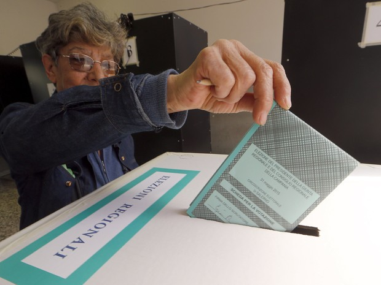

Italianos vão às urnas neste domingo em clima de indecisão
Eleitores escolhem senadores e deputados que irão compor o Parlamento. Votação é marcada por sistema político complexo e indecisão dos eleitores.
Os italianos vão às urnas neste domingo (4) para escolher deputados e senadores que vão compor o Parlamento. A votação é imprevisível e marcada pela falta de favoritos, pelo alto índice de eleitores indecisos, pelo panorama político fragmentado e por um sistema eleitoral complexo.
As urnas abriram às 7 horas (horário local, 3 horas em Brasília) e fecham às 23 horas (19 horas em Brasília). O resultado deve ser divulgado na segunda-feira (4).
Depois de dois meses de uma campanha dominada por temas vinculados aos aos imigrantes, à insegurança e a uma recuperação econômica cujos efeitos as pessoas ainda não percebem, o sábado (3) foi dia de "silêncio eleitoral".
Há três forças principais brigando pela maioria dos votos: uma coalizão de direita, liderada pelo Forza Italia (FI), do ex-premiê Silvio Berlusconi, a de centro-esquerda, liderada pelo Partido Democrata (PD), do também ex-premiê Matteo Renzi, e o Movimento 5 Estrelas (M5E), cujo líder é Luigi Di Maio. Há duas semanas, a direita aparece com vantagem, mas sem a maioria necessária para compor um governo.
Antes da entrada em vigor de uma proibição de pesquisas de voto, há 15 dias, pesquisas indicavam que a aliança de Berlusconi conquistará cerca de 36% dos votos, cifra que lhe daria mais assentos do que qualquer outro bloco, mas não uma maioria absoluta.
A Itália tem uma longa tradição de encontrar maneiras de sair de impasses políticos aparentemente insolúveis, e comentaristas vêm especulando que, no caso de um Parlamento sem maioria, Berlusconi buscará uma coalizão ampla com a centro-esquerda.
Berlusconi, ex-premiê e controversa figura polícia no país, não pode assumir nenhum cargo público até 2019, devido a uma condenação por fraude fiscal. Caso seu partido vença as eleições, o presidente do Parlamento Europeu, Antonio Tajani, deve assumir o governo.
Se a maioria dos votos da coalizão de direita ficar com o partido anti-imigração e nacionalista Liga, quem assume o cargo é Matteo Salvini. Em virtude do acordo interno da coalizão, quem ficar na liderança dos votos deve dirigir o governo.
Sem ideologia e disposta a quebrar a tradicional bipolaridade entre direita e esquerda, segundo as pesquisas, o M5E pode se confirmar como o maior partido do país neste pleito, aparecendo com 27,8% das intenções de voto – índice que não é suficiente para que o partido governe sozinho. O M5E diz se negar a formar coalizões, mas Di Maio insinuou estar disposto a conversar com outras forças políticas.
Na coalizão de centro-esquerda, Renzi é automaticamente candidato, mas não tem tanta aceitação quando o atual primeiro-ministro do país, Paolo Gentiloni. A apenas um dia do pleito, Renzi reconheceu que, caso sua coalizão alcance maioria, ele não será, necessariamente, o líder do governo. De acordo com as últimas pesquisas, sua coalizão tem cerca de 23% das intenções de voto.
Se nenhuma maioria se desenhar, o presidente da República, Sergio Mattarella, deixará em função o governo atual de Gentiloni -- sem necessidade de solicitar uma moção de confiança do novo Parlamento -- para administrar os assuntos correntes. De qualquer maneira, esse procedimento levará tempo.
Cerca de um terço dos entrevistados disseram não ter certeza de qual será seu voto, nem mesmo se irão comparecer às urnas, visto que o voto é facultativo na Itália.